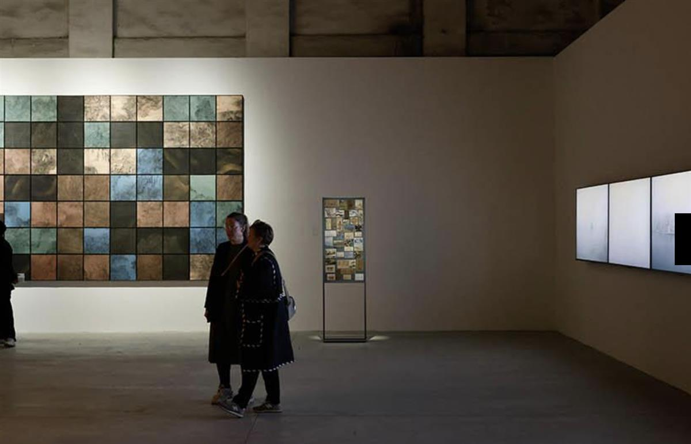
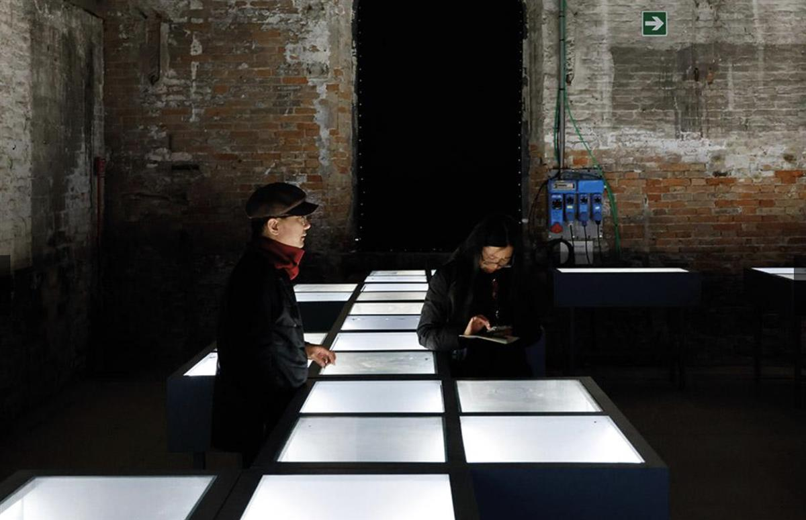

SOURCE: LA BIENNALE DI VENEZIA
Atlas: Harmony in Diversity
China (People’s Republic of)
The character “集” depicts three birds perched on a single tree. As a verb, it encompasses meanings including to gather, converge, collect, or assemble. As a noun, “集” can be translated as “Atlas” — a collection of art, cultural relics, or knowledge compiled into a document. The dual meanings of “集” are employed to underscore the concept of integration.
We have chosen the Chinese character “集” as the exhibition name, which embodies the convergence of a diverse spectrum encompassing different races, beliefs, identities, ideas, purposes, backgrounds, and cultures on a global scale.
In the past half century, there has been a significant focus on the discourse of “difference”, the dichotomy of subject and object, and the opposition between “the self” and “the other”, leading to ongoing conflicts and confrontations. Today, as humanity grapples with deteriorating external ecological conditions and the internal challenges of “foreigners everywhere”, this exhibition seeks to facilitate a paradigm shifting — from “difference” to “coexistence” — by reactivating and disseminating the wisdom embedded in traditional Chinese culture, which advocates for “harmony in diversity”, “harmonious coexistence”, and “shared beauty.'

Commissioner: China Arts and Entertainment Group (CAEG)
Curators: Wang Xiaosong, Jiang Jun
Exhibitors: Che Jianquan, Jiao Xingtao, Shi Hui, Qiu Zhenzhong, Wang Shaoqiang, Wang Zhenghong, Zhu Jinshi, The project team of “A Comprehensive Collection of Ancient Chinese Paintings”
Venue: Arsenale

SOURCE: LA BIENNALE DI VENEZIA